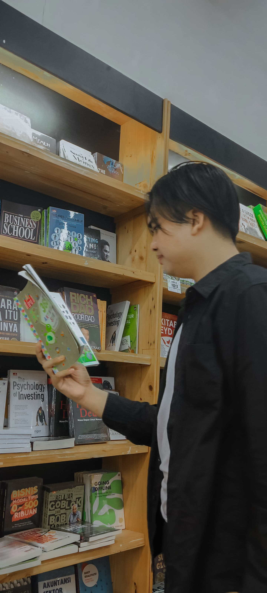

Selamat Datang ✧â â—â (â â°â â–¿â â°â )â â—œâ ✧

Saya Tegar Suryatama.

Saya Tegar Suryatama.

Saya lulusan D3 Manajemen Informatika dari Politeknik Negeri Sriwijaya. Selain di bidang IT, saya juga antusias menjajaki peluang di administrasi, pengelolaan data, dan peran lintas fungsi. Saya mudah beradaptasi, cepat belajar, dan senang mengeksplorasi hal baru untuk mendukung tim maupun perusahaan.
Agustus – November 2023
2024 – Sekarang
Agustus – Oktober 2025
Oktober 2025 – Sekarang

Menunjukkan kemampuan mengolah data, administrasi kepegawaian, serta pengarsipan dengan keterampilan Microsoft Office dan Google Suite.

Menunjukkan kemampuan mengolah data dengan Excel, termasuk rumus, Pivot Table, dan Dashboard untuk laporan yang akurat dan sistematis.

Menunjukkan kemampuan dalam membuat desain visual menggunakan Canva, dengan berbagai elemen dan template menarik.

Layanan freelance meliputi pembuatan CV, website, joki tugas, pencarian jurnal, pengubahan file, pembuatan laporan KP/LA, dan lainnya dengan hasil berkualitas.
🎯Tujuan:
Aplikasi ini dibuat untuk mempermudah pengelolaan data bantuan PKH dengan metode SAW agar proses seleksi dan manajemen data menjadi lebih efisien dan akurat.
🛠️Fitur Utama:
🎯Tujuan:
Aplikasi ini dibuat untuk mempermudah proses pendaftaran dan seleksi penerima beasiswa secara online dengan metode SMART agar penilaian menjadi lebih objektif dan terukur.
🛠️Fitur Utama:
🎯Tujuan:
Aplikasi ini dibuat untuk mempermudah pengecekan dan pendataan perangkat IT agar proses monitoring dan perawatan menjadi lebih terorganisir dan efisien.
ğŸ› ï¸ Fitur Utama:
🎯Tujuan:
Aplikasi ini dibuat untuk mempermudah proses verifikasi keaslian dan kelengkapan surat pembayaran barang agar proses administrasi menjadi cepat dan tepat.
🛠️Fitur Utama:

Microsoft
Advanced (95%)
Menguasai sistem operasi Windows serta integrasi ekosistem Microsoft untuk produktivitas dan kolaborasi digital.

Microsoft Office
Advanced (90%)
Menguasai paket produktivitas Microsoft Office secara menyeluruh untuk menunjang semua kebutuhan.

Google Workspace
Advanced (90%)
Terampil memanfaatkan layanan Google untuk kerja kolaboratif dan produktivitas digital.

Canva
Advanced (95%)
Mahir mendesain berbagai media visual dengan prinsip estetika.

ChatGPT
Advanced (90%)
Menggunakan AI generatif secara efektif untuk meningkatkan produktivitas, efisiensi kerja, dan kualitas output di berbagai bidang.
Zoom
Advanced (90%)
Mengelola komunikasi virtual secara profesional, termasuk penyelenggaraan rapat, diskusi tim, dan presentasi jarak jauh secara efektif.

Notion
Advanced (80%)
Memanfaatkan Notion secara terstruktur untuk manajemen informasi, kolaborasi digital, dan pengelolaan workflow secara efisien.

Visual Studio Code
Advanced (90%)
Menggunakan Visual Studio Code secara terstruktur untuk pengelolaan proyek, kolaborasi kode, dan manajemen workflow secara efisien.
Pemberi Sertifikat: MySkill
Tanggal Penerbitan: 18 - 02 - 2025

Pemberi Sertifikat: MySkill
Tanggal Penerbitan: 27 - 11 - 2024

Pemberi Sertifikat: MySkill
Tanggal Penerbitan: 29 - 11 - 2024
Pemberi Sertifikat: MySkill
Tanggal Penerbitan: 29 - 10 - 2024

Pemberi Sertifikat: MySkill
Tanggal Penerbitan: 16 - 09 - 2024
Mampu menyusun jadwal dan menyelesaikan tugas secara efisien.

Terampil dalam berinteraksi dengan tim dan pihak eksternal.

Cepat dalam mencari solusi atas kendala yang terjadi.

Teliti dalam mengelola data dan dokumen penting.

Cepat belajar dan menguasai perangkat lunak baru.

Mampu bekerja dalam tim dengan komunikasi dan koordinasi yang baik.

Mampu beradaptasi dengan berbagai tugas dan tantangan.

tegarsuryatama73@gmail.com


Saya sangat menghargai waktu Anda untuk melihat portofolio ini.
Semoga kesempatan baik ini bisa berlanjut ke tahap diskusi lebih lanjut ✨
🚀 Saya siap memberikan kontribusi terbaik untuk perusahaan Anda!